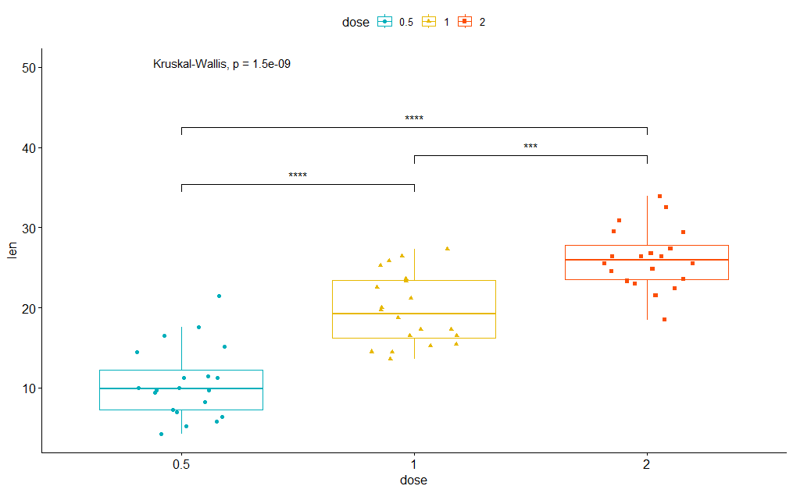

<!DOCTYPE html>


<html lang="zh-CN">


<head>
  <meta name="baidu-site-verification" content="codeva-NSg7ynviLa" />
  <meta charset="utf-8" />
    
  <meta name="viewport" content="width=device-width, initial-scale=1, maximum-scale=1" />
  <title>
    R包-ggpubr |  
  </title>
  <meta name="generator" content="hexo-theme-ayer">
  
  <link rel="shortcut icon" href="/images/mojie.jpg" />
  
  
<link rel="stylesheet" href="/dist/main.css">

  <link rel="stylesheet" href="https://cdn.jsdelivr.net/gh/Shen-Yu/cdn/css/remixicon.min.css">
  
<link rel="stylesheet" href="/css/custom.css">

  
  <script src="https://cdn.jsdelivr.net/npm/pace-js@1.0.2/pace.min.js"></script>
  
  

  

<link rel="alternate" href="/atom.xml" title="null" type="application/atom+xml">
</head>

</html>

<body>
  <div id="app">
    
      
    <main class="content on">
      <section class="outer">
  <article
  id="post-R包-ggpubr"
  class="article article-type-post"
  itemscope
  itemprop="blogPost"
  data-scroll-reveal
>
  <div class="article-inner">
    
    <header class="article-header">
       
<h1 class="article-title sea-center" style="border-left:0" itemprop="name">
  R包-ggpubr
</h1>
 

    </header>
     
    <div class="article-meta">
      <a href="/posts/4168b428/" class="article-date">
  <time datetime="2023-07-04T12:49:06.000Z" itemprop="datePublished">2023-07-04</time>
</a> 
  <div class="article-category">
    <a class="article-category-link" href="/categories/%E6%95%B0%E6%8D%AE%E5%88%86%E6%9E%90/">数据分析</a> / <a class="article-category-link" href="/categories/%E6%95%B0%E6%8D%AE%E5%88%86%E6%9E%90/R/">R</a>
  </div>
  
<div class="word_count">
    <span class="post-time">
        <span class="post-meta-item-icon">
            <i class="ri-quill-pen-line"></i>
            <span class="post-meta-item-text"> 字数统计:</span>
            <span class="post-count">2.6k</span>
        </span>
    </span>

    <span class="post-time">
        &nbsp; | &nbsp;
        <span class="post-meta-item-icon">
            <i class="ri-book-open-line"></i>
            <span class="post-meta-item-text"> 阅读时长≈</span>
            <span class="post-count">11 分钟</span>
        </span>
    </span>
</div>
 
    </div>
      
    <div class="tocbot"></div>


  
    <div class="article-entry" itemprop="articleBody">
       
  <link rel="stylesheet" type="text/css" href="https://cdn.jsdelivr.net/hint.css/2.4.1/hint.min.css"><p>ggpubr 是用于可视化的一个 R 包。</p>
<span id="more"></span>
<h1>散点图</h1>
<p>ggpubr 散点图是使用 <code>ggscatter</code> 函数，但是貌似没法调节透明度（alpha)，因此没办法用于数据量较大有重叠的散点图。</p>
<p>因此这里我感觉不如直接使用其它包 ，比如我就用 ggplot2 和 scatterplot3d 画 PCA 的二维和三维图。</p>
<p>使用  <code>ggscatter</code> 函数的一个简单例子如下</p>
<figure class="highlight r"><table><tr><td class="gutter"><pre><span class="line">1</span><br><span class="line">2</span><br><span class="line">3</span><br><span class="line">4</span><br><span class="line">5</span><br><span class="line">6</span><br></pre></td><td class="code"><pre><span class="line">data<span class="punctuation">(</span><span class="string">&quot;mtcars&quot;</span><span class="punctuation">)</span></span><br><span class="line">df <span class="operator">&lt;-</span> mtcars</span><br><span class="line">df<span class="operator">$</span>cyl <span class="operator">&lt;-</span> as.factor<span class="punctuation">(</span>df<span class="operator">$</span>cyl<span class="punctuation">)</span></span><br><span class="line">p1 <span class="operator">&lt;-</span> ggscatter<span class="punctuation">(</span>df<span class="punctuation">,</span> x <span class="operator">=</span> <span class="string">&quot;wt&quot;</span><span class="punctuation">,</span> y <span class="operator">=</span> <span class="string">&quot;mpg&quot;</span><span class="punctuation">,</span></span><br><span class="line">                color <span class="operator">=</span> <span class="string">&quot;cyl&quot;</span><span class="punctuation">)</span></span><br><span class="line">p1</span><br></pre></td></tr></table></figure>
<p></p>
<p>你可以在图中对每一个点添加标签（适合点比较少的情况），如下。其中 ：</p>
<ul>
<li><code>label = &quot;name&quot;</code>： 指定标签列</li>
<li><code>repel = TRUE</code> :       避免标签重叠</li>
</ul>
<figure class="highlight r"><table><tr><td class="gutter"><pre><span class="line">1</span><br><span class="line">2</span><br><span class="line">3</span><br><span class="line">4</span><br></pre></td><td class="code"><pre><span class="line">df<span class="operator">$</span>name <span class="operator">&lt;-</span> rownames<span class="punctuation">(</span>df<span class="punctuation">)</span></span><br><span class="line">ggscatter<span class="punctuation">(</span>df<span class="punctuation">,</span> x <span class="operator">=</span> <span class="string">&quot;wt&quot;</span><span class="punctuation">,</span> y <span class="operator">=</span> <span class="string">&quot;mpg&quot;</span><span class="punctuation">,</span></span><br><span class="line">          color <span class="operator">=</span> <span class="string">&quot;cyl&quot;</span><span class="punctuation">,</span> palette <span class="operator">=</span> <span class="built_in">c</span><span class="punctuation">(</span><span class="string">&quot;#00AFBB&quot;</span><span class="punctuation">,</span> <span class="string">&quot;#E7B800&quot;</span><span class="punctuation">,</span> <span class="string">&quot;#FC4E07&quot;</span><span class="punctuation">)</span><span class="punctuation">,</span></span><br><span class="line">          label <span class="operator">=</span> <span class="string">&quot;name&quot;</span><span class="punctuation">,</span> repel <span class="operator">=</span> <span class="literal">TRUE</span><span class="punctuation">)</span></span><br></pre></td></tr></table></figure>
<p></p>
<h1>折线图</h1>
<p>折线图比较简单，如下</p>
<figure class="highlight r"><table><tr><td class="gutter"><pre><span class="line">1</span><br><span class="line">2</span><br><span class="line">3</span><br><span class="line">4</span><br><span class="line">5</span><br><span class="line">6</span><br><span class="line">7</span><br><span class="line">8</span><br><span class="line">9</span><br></pre></td><td class="code"><pre><span class="line">df4 <span class="operator">&lt;-</span> data.frame<span class="punctuation">(</span>sex<span class="operator">=</span>factor<span class="punctuation">(</span><span class="built_in">rep</span><span class="punctuation">(</span><span class="built_in">c</span><span class="punctuation">(</span><span class="string">&quot;F&quot;</span><span class="punctuation">,</span><span class="string">&quot;M&quot;</span><span class="punctuation">)</span><span class="punctuation">,</span>each<span class="operator">=</span><span class="number">10</span><span class="punctuation">)</span><span class="punctuation">)</span><span class="punctuation">,</span>year <span class="operator">=</span> factor<span class="punctuation">(</span><span class="built_in">c</span><span class="punctuation">(</span>seq<span class="punctuation">(</span><span class="number">10</span><span class="punctuation">,</span><span class="number">19</span><span class="punctuation">)</span><span class="punctuation">,</span>seq<span class="punctuation">(</span><span class="number">10</span><span class="punctuation">,</span><span class="number">19</span><span class="punctuation">)</span><span class="punctuation">)</span><span class="punctuation">)</span><span class="punctuation">,</span> weight<span class="operator">=</span><span class="built_in">c</span><span class="punctuation">(</span>rnorm<span class="punctuation">(</span><span class="number">10</span><span class="punctuation">,</span><span class="number">20</span><span class="punctuation">)</span><span class="punctuation">,</span>rnorm<span class="punctuation">(</span><span class="number">10</span><span class="punctuation">,</span><span class="number">40</span><span class="punctuation">)</span><span class="punctuation">)</span><span class="punctuation">)</span></span><br><span class="line"></span><br><span class="line">ggline<span class="punctuation">(</span>df4<span class="punctuation">,</span> x<span class="operator">=</span><span class="string">&quot;year&quot;</span><span class="punctuation">,</span> y<span class="operator">=</span><span class="string">&quot;weight&quot;</span><span class="punctuation">,</span>  color <span class="operator">=</span> <span class="string">&quot;sex&quot;</span><span class="punctuation">,</span> </span><br><span class="line">       shape <span class="operator">=</span> <span class="string">&quot;sex&quot;</span><span class="punctuation">,</span> linetype<span class="operator">=</span><span class="string">&quot;sex&quot;</span><span class="punctuation">,</span> <span class="comment"># 设置点的形状，线的形状</span></span><br><span class="line">       <span class="comment"># position = position_dodge(1.0), # 避免点与点重叠在一块</span></span><br><span class="line">       palette <span class="operator">=</span> <span class="built_in">c</span><span class="punctuation">(</span><span class="string">&quot;#00AFBB&quot;</span><span class="punctuation">,</span> <span class="string">&quot;#E7B800&quot;</span><span class="punctuation">)</span><span class="punctuation">,</span> <span class="comment"># 调色板</span></span><br><span class="line">       legend.title <span class="operator">=</span> <span class="string">&quot;&quot;</span><span class="punctuation">,</span> <span class="comment"># 取消图例标题</span></span><br><span class="line">       legend<span class="operator">=</span><span class="built_in">c</span><span class="punctuation">(</span><span class="number">0.94</span><span class="punctuation">,</span><span class="number">0.18</span><span class="punctuation">)</span><span class="punctuation">,</span> <span class="comment"># 设置图例位置，手动调节</span></span><br><span class="line"><span class="punctuation">)</span></span><br></pre></td></tr></table></figure>
<p></p>
<p>这里需要注意一下这个 <code>position</code> 参数，通过设置这个参数可以控制位点的位置，从而避免位点重叠在一起（但是这种做法其实相当于修改了数据）；而且设置了这个参数以后，可能回合 <code>xlim()</code> 或<code>ylim()</code> 冲突（如果位点通过  <code>position</code> 参数 偏移后超出了设定的 X轴或Y轴范围，这一行数据就会变成缺失，提示<code>1: Removed 1 row containing missing values (geom_line())</code>。</p>
<p>常用的位置调整选项如下：</p>
<ul>
<li><code>position = position_dodge(width = 0.5)</code>：这将使同一 x 值的不同组的数据点之间水平偏移一定的距离，从而避免重叠。</li>
<li><code>position = position_jitter(width = 0.1, height = 0.1)</code>：这会给每个点添加随机的微小偏移，使得即便有重叠，也能显示出更多的数据点。这种方法常用于散点图，但在折线图中也可以辅助显示。</li>
<li><code>position = &quot;identity&quot;</code>：无位置调整，所有的点将直接绘制在其实际的位置上。</li>
</ul>
<h1>条形图</h1>
<p>条形图使用 <code>ggbarplot</code> 函数。</p>
<h2 id="横坐标标签不重复">横坐标标签不重复</h2>
<p>这里是指的是所有数据横坐标的标签均不相同的情况下。</p>
<p>首先我们看一个简单的例子，按照纵坐标大小排序绘图。如下</p>
<figure class="highlight r"><table><tr><td class="gutter"><pre><span class="line">1</span><br><span class="line">2</span><br><span class="line">3</span><br><span class="line">4</span><br><span class="line">5</span><br></pre></td><td class="code"><pre><span class="line">ggbarplot<span class="punctuation">(</span>df<span class="punctuation">,</span> x<span class="operator">=</span><span class="string">&quot;name&quot;</span><span class="punctuation">,</span> y<span class="operator">=</span><span class="string">&quot;mpg&quot;</span><span class="punctuation">,</span> fill <span class="operator">=</span> <span class="string">&quot;cyl&quot;</span><span class="punctuation">,</span> color <span class="operator">=</span> <span class="string">&quot;white&quot;</span><span class="punctuation">,</span></span><br><span class="line">          palette <span class="operator">=</span> <span class="string">&quot;jco&quot;</span><span class="punctuation">,</span><span class="comment">#杂志jco的配色</span></span><br><span class="line">          sort.val <span class="operator">=</span> <span class="string">&quot;desc&quot;</span><span class="punctuation">,</span><span class="comment">#按照纵坐标大小下降排序</span></span><br><span class="line">          sort.by.groups<span class="operator">=</span><span class="literal">FALSE</span><span class="punctuation">,</span><span class="comment">#不按组排序</span></span><br><span class="line">          x.text.angle<span class="operator">=</span><span class="number">60</span><span class="punctuation">)</span> <span class="comment">#x坐标文字角度</span></span><br></pre></td></tr></table></figure>
<p></p>
<p>如果我们按组进行排序，则设置 <code>sort.by.groups=TRUE</code> ，如下</p>
<figure class="highlight r"><table><tr><td class="gutter"><pre><span class="line">1</span><br><span class="line">2</span><br><span class="line">3</span><br><span class="line">4</span><br><span class="line">5</span><br></pre></td><td class="code"><pre><span class="line">ggbarplot<span class="punctuation">(</span>df<span class="punctuation">,</span> x<span class="operator">=</span><span class="string">&quot;name&quot;</span><span class="punctuation">,</span> y<span class="operator">=</span><span class="string">&quot;mpg&quot;</span><span class="punctuation">,</span> fill <span class="operator">=</span> <span class="string">&quot;cyl&quot;</span><span class="punctuation">,</span> color <span class="operator">=</span> <span class="string">&quot;white&quot;</span><span class="punctuation">,</span></span><br><span class="line">          palette <span class="operator">=</span> <span class="string">&quot;jco&quot;</span><span class="punctuation">,</span><span class="comment">#杂志jco的配色</span></span><br><span class="line">          sort.val <span class="operator">=</span> <span class="string">&quot;desc&quot;</span><span class="punctuation">,</span><span class="comment">#按照纵坐标大小下降排序</span></span><br><span class="line">          sort.by.groups<span class="operator">=</span><span class="literal">TRUE</span><span class="punctuation">,</span><span class="comment">#按组排序</span></span><br><span class="line">          x.text.angle<span class="operator">=</span><span class="number">60</span><span class="punctuation">)</span> <span class="comment">#x坐标文字角度</span></span><br></pre></td></tr></table></figure>
<p></p>
<p>我们可以通过设置 <code>rotate=TRUE</code> 来翻转 X 轴和 Y 轴 (此时不用设置 <code>x.text.angle</code> ) 。</p>
<figure class="highlight r"><table><tr><td class="gutter"><pre><span class="line">1</span><br><span class="line">2</span><br><span class="line">3</span><br><span class="line">4</span><br><span class="line">5</span><br></pre></td><td class="code"><pre><span class="line">ggbarplot<span class="punctuation">(</span>df<span class="punctuation">,</span> x<span class="operator">=</span><span class="string">&quot;name&quot;</span><span class="punctuation">,</span> y<span class="operator">=</span><span class="string">&quot;mpg&quot;</span><span class="punctuation">,</span> fill <span class="operator">=</span> <span class="string">&quot;cyl&quot;</span><span class="punctuation">,</span> color <span class="operator">=</span> <span class="string">&quot;white&quot;</span><span class="punctuation">,</span></span><br><span class="line">          palette <span class="operator">=</span> <span class="string">&quot;jco&quot;</span><span class="punctuation">,</span><span class="comment">#杂志jco的配色</span></span><br><span class="line">          sort.val <span class="operator">=</span> <span class="string">&quot;desc&quot;</span><span class="punctuation">,</span><span class="comment">#按照纵坐标大小下降排序</span></span><br><span class="line">          sort.by.groups<span class="operator">=</span><span class="literal">TRUE</span><span class="punctuation">,</span><span class="comment">#按组排序</span></span><br><span class="line">          rotate<span class="operator">=</span><span class="literal">TRUE</span><span class="punctuation">)</span></span><br></pre></td></tr></table></figure>
<p></p>
<h2 id="横坐标标签不重复-2">横坐标标签不重复</h2>
<p>如果横坐标标签重复，比如我们对不同情况下去做重复实验，不同分组对应的 x 轴标签均相同。</p>
<p>这里有一点我不太清楚原理，基于 ggplot2 的书籍，我了解到了 <code>position_dodge(width=0.5)</code> 中必须与外面的<code>width=0.5</code>中的数值相同， 这样才能使用组内的柱子之间间距为0，彼此紧挨着。</p>
<figure class="highlight r"><table><tr><td class="gutter"><pre><span class="line">1</span><br><span class="line">2</span><br><span class="line">3</span><br><span class="line">4</span><br><span class="line">5</span><br><span class="line">6</span><br><span class="line">7</span><br></pre></td><td class="code"><pre><span class="line">p <span class="operator">&lt;-</span> ggbarplot<span class="punctuation">(</span>df4<span class="punctuation">,</span> x<span class="operator">=</span><span class="string">&quot;位点数&quot;</span><span class="punctuation">,</span> y<span class="operator">=</span><span class="string">&quot;基因型一致率&quot;</span><span class="punctuation">,</span> fill <span class="operator">=</span> <span class="string">&quot;参考群数目&quot;</span><span class="punctuation">,</span> color <span class="operator">=</span> <span class="string">&quot;white&quot;</span><span class="punctuation">,</span></span><br><span class="line">          palette <span class="operator">=</span> <span class="string">&quot;jco&quot;</span><span class="punctuation">,</span><span class="comment">#杂志jco的配色</span></span><br><span class="line">          x.text.angle<span class="operator">=</span><span class="number">60</span><span class="punctuation">,</span> <span class="comment">#x坐标文字角度</span></span><br><span class="line">          ylim <span class="operator">=</span> <span class="built_in">c</span><span class="punctuation">(</span><span class="built_in">min</span><span class="punctuation">(</span>df4<span class="operator">$</span><span class="string">&quot;基因型一致率&quot;</span><span class="punctuation">)</span><span class="operator">-</span><span class="number">0.1</span><span class="punctuation">,</span><span class="built_in">ceiling</span><span class="punctuation">(</span><span class="built_in">max</span><span class="punctuation">(</span>df4<span class="operator">$</span><span class="string">&quot;基因型一致率&quot;</span><span class="punctuation">)</span><span class="operator">*</span><span class="number">10</span><span class="punctuation">)</span><span class="operator">/</span><span class="number">10</span><span class="punctuation">)</span><span class="punctuation">,</span> <span class="comment"># y轴区间</span></span><br><span class="line">          width<span class="operator">=</span><span class="number">0.5</span><span class="punctuation">,</span> <span class="comment"># 条形图中条行的宽度</span></span><br><span class="line">          position <span class="operator">=</span> position_dodge<span class="punctuation">(</span>width<span class="operator">=</span><span class="number">0.5</span><span class="punctuation">)</span><span class="punctuation">,</span> <span class="comment">#设置分组之间并排，其中width必须和上面设置完全一致</span></span><br><span class="line">          <span class="punctuation">)</span></span><br></pre></td></tr></table></figure>
<p></p>
<p>如果需要有一些组内间距，则将 <code>position_dodge(width=*) </code>中的值设得更大一下，比如下面设为 0.7</p>
<figure class="highlight r"><table><tr><td class="gutter"><pre><span class="line">1</span><br><span class="line">2</span><br><span class="line">3</span><br><span class="line">4</span><br><span class="line">5</span><br><span class="line">6</span><br><span class="line">7</span><br></pre></td><td class="code"><pre><span class="line">p <span class="operator">&lt;-</span> ggbarplot<span class="punctuation">(</span>df4<span class="punctuation">,</span> x<span class="operator">=</span><span class="string">&quot;位点数&quot;</span><span class="punctuation">,</span> y<span class="operator">=</span><span class="string">&quot;基因型一致率&quot;</span><span class="punctuation">,</span> fill <span class="operator">=</span> <span class="string">&quot;参考群数目&quot;</span><span class="punctuation">,</span> color <span class="operator">=</span> <span class="string">&quot;white&quot;</span><span class="punctuation">,</span></span><br><span class="line">          palette <span class="operator">=</span> <span class="string">&quot;jco&quot;</span><span class="punctuation">,</span><span class="comment">#杂志jco的配色</span></span><br><span class="line">          x.text.angle<span class="operator">=</span><span class="number">60</span><span class="punctuation">,</span> <span class="comment">#x坐标文字角度</span></span><br><span class="line">          ylim <span class="operator">=</span> <span class="built_in">c</span><span class="punctuation">(</span><span class="built_in">min</span><span class="punctuation">(</span>df4<span class="operator">$</span><span class="string">&quot;基因型一致率&quot;</span><span class="punctuation">)</span><span class="operator">-</span><span class="number">0.1</span><span class="punctuation">,</span><span class="built_in">ceiling</span><span class="punctuation">(</span><span class="built_in">max</span><span class="punctuation">(</span>df4<span class="operator">$</span><span class="string">&quot;基因型一致率&quot;</span><span class="punctuation">)</span><span class="operator">*</span><span class="number">10</span><span class="punctuation">)</span><span class="operator">/</span><span class="number">10</span><span class="punctuation">)</span><span class="punctuation">,</span> <span class="comment"># y轴区间</span></span><br><span class="line">          width<span class="operator">=</span><span class="number">0.5</span><span class="punctuation">,</span> <span class="comment"># 条形图中条行的宽度</span></span><br><span class="line">          position <span class="operator">=</span> position_dodge<span class="punctuation">(</span>width<span class="operator">=</span><span class="number">0.7</span><span class="punctuation">)</span><span class="punctuation">,</span> <span class="comment">#设置分组之间并排，其中width必须和上面设置完全一致</span></span><br><span class="line">          <span class="punctuation">)</span></span><br></pre></td></tr></table></figure>
<p></p>
<h1>棒棒糖图</h1>
<p>棒棒图可以视为条形图的一种变体，用线条和点来替换了条形图中的长方形，如下。</p>
<p>这里 <code>ggdotchart</code> 函数默认就是画一个点图，因此必须设置 <code>add = &quot;segments&quot;</code> 在点图基础上添加棒子（柱状线条）。</p>
<figure class="highlight r"><table><tr><td class="gutter"><pre><span class="line">1</span><br><span class="line">2</span><br><span class="line">3</span><br><span class="line">4</span><br><span class="line">5</span><br><span class="line">6</span><br></pre></td><td class="code"><pre><span class="line">ggdotchart<span class="punctuation">(</span>df<span class="punctuation">,</span> x<span class="operator">=</span><span class="string">&quot;name&quot;</span><span class="punctuation">,</span> y<span class="operator">=</span><span class="string">&quot;mpg&quot;</span><span class="punctuation">,</span> color <span class="operator">=</span> <span class="string">&quot;cyl&quot;</span><span class="punctuation">,</span> </span><br><span class="line">           palette <span class="operator">=</span> <span class="string">&quot;jco&quot;</span><span class="punctuation">,</span> sorting <span class="operator">=</span> <span class="string">&quot;desc&quot;</span><span class="punctuation">,</span></span><br><span class="line">           dot.size <span class="operator">=</span> <span class="number">6</span><span class="punctuation">,</span> <span class="comment"># 点的大小</span></span><br><span class="line">           add <span class="operator">=</span> <span class="string">&quot;segments&quot;</span><span class="punctuation">,</span> <span class="comment"># 在点图基础上添加棒子（柱状线条）</span></span><br><span class="line">           add.params <span class="operator">=</span> <span class="built_in">list</span><span class="punctuation">(</span>color <span class="operator">=</span> <span class="string">&quot;cyl&quot;</span><span class="punctuation">,</span> size <span class="operator">=</span> <span class="number">0.5</span><span class="punctuation">)</span><span class="punctuation">,</span> <span class="comment"># 棒子的参数，颜色设置与点相同</span></span><br><span class="line">          <span class="punctuation">)</span></span><br></pre></td></tr></table></figure>
<p></p>
<p>如果需要按组排序，则设置 <code>group = &quot;cyl&quot;</code> ，如下</p>
<figure class="highlight r"><table><tr><td class="gutter"><pre><span class="line">1</span><br><span class="line">2</span><br><span class="line">3</span><br><span class="line">4</span><br><span class="line">5</span><br><span class="line">6</span><br><span class="line">7</span><br></pre></td><td class="code"><pre><span class="line">ggdotchart<span class="punctuation">(</span>df<span class="punctuation">,</span> x<span class="operator">=</span><span class="string">&quot;name&quot;</span><span class="punctuation">,</span> y<span class="operator">=</span><span class="string">&quot;mpg&quot;</span><span class="punctuation">,</span> color <span class="operator">=</span> <span class="string">&quot;cyl&quot;</span><span class="punctuation">,</span> </span><br><span class="line">           palette <span class="operator">=</span> <span class="string">&quot;jco&quot;</span><span class="punctuation">,</span> sorting <span class="operator">=</span> <span class="string">&quot;desc&quot;</span><span class="punctuation">,</span></span><br><span class="line">           dot.size <span class="operator">=</span> <span class="number">6</span><span class="punctuation">,</span> <span class="comment"># 点的大小</span></span><br><span class="line">           add <span class="operator">=</span> <span class="string">&quot;segments&quot;</span><span class="punctuation">,</span> <span class="comment"># 在点图基础上添加棒子（柱状线条）</span></span><br><span class="line">           add.params <span class="operator">=</span> <span class="built_in">list</span><span class="punctuation">(</span>color <span class="operator">=</span> <span class="string">&quot;cyl&quot;</span><span class="punctuation">,</span> size <span class="operator">=</span> <span class="number">0.5</span><span class="punctuation">)</span><span class="punctuation">,</span> <span class="comment"># 棒子的参数，颜色设置与点相同</span></span><br><span class="line">           group <span class="operator">=</span> <span class="string">&quot;cyl&quot;</span><span class="punctuation">,</span>  <span class="comment"># 按组排序</span></span><br><span class="line">          <span class="punctuation">)</span></span><br></pre></td></tr></table></figure>
<p></p>
<p>如果需要在点上显示数值，则加上标签<code>label = round(df$mpg)</code> ，<code>font.label = list(color=&quot;white&quot;, size=9, vjust=0.5)</code> 这一句用于设置标签上的文字，这里的<code>vjust=0.5</code>就是使得标签文字出现在点的中心部位（参考<a target="_blank" rel="noopener" href="https://blog.csdn.net/SThranduil/article/details/60572564">R语言 hjust = 0, vjust = 1属性设置</a>） 。</p>
<figure class="highlight plaintext"><table><tr><td class="gutter"><pre><span class="line">1</span><br><span class="line">2</span><br><span class="line">3</span><br><span class="line">4</span><br><span class="line">5</span><br><span class="line">6</span><br><span class="line">7</span><br><span class="line">8</span><br></pre></td><td class="code"><pre><span class="line">ggdotchart(df, x=&quot;name&quot;, y=&quot;mpg&quot;, color = &quot;cyl&quot;, </span><br><span class="line">           palette = &quot;jco&quot;, sorting = &quot;desc&quot;,</span><br><span class="line">           dot.size = 6, # 点的大小</span><br><span class="line">           add = &quot;segments&quot;, # 在点图基础上添加棒子（柱状线条）</span><br><span class="line">           add.params = list(color = &quot;cyl&quot;, size = 0.5), # 棒子的参数，颜色设置与点相同</span><br><span class="line">           group = &quot;cyl&quot;,  # 按组排序</span><br><span class="line">           label = round(df$mpg), # 添加标签</span><br><span class="line">           font.label = list(color=&quot;white&quot;, size=9, vjust=0.5)) # 设置标签</span><br></pre></td></tr></table></figure>
<p></p>
<p>最后，你可以使用 <code>rotate = TRUE</code> 来翻转坐标轴，如下</p>
<figure class="highlight r"><table><tr><td class="gutter"><pre><span class="line">1</span><br><span class="line">2</span><br><span class="line">3</span><br><span class="line">4</span><br><span class="line">5</span><br><span class="line">6</span><br><span class="line">7</span><br><span class="line">8</span><br><span class="line">9</span><br></pre></td><td class="code"><pre><span class="line">ggdotchart<span class="punctuation">(</span>df<span class="punctuation">,</span> x<span class="operator">=</span><span class="string">&quot;name&quot;</span><span class="punctuation">,</span> y<span class="operator">=</span><span class="string">&quot;mpg&quot;</span><span class="punctuation">,</span> color <span class="operator">=</span> <span class="string">&quot;cyl&quot;</span><span class="punctuation">,</span> </span><br><span class="line">           palette <span class="operator">=</span> <span class="string">&quot;jco&quot;</span><span class="punctuation">,</span> sorting <span class="operator">=</span> <span class="string">&quot;desc&quot;</span><span class="punctuation">,</span></span><br><span class="line">           dot.size <span class="operator">=</span> <span class="number">6</span><span class="punctuation">,</span> <span class="comment"># 点的大小</span></span><br><span class="line">           add <span class="operator">=</span> <span class="string">&quot;segments&quot;</span><span class="punctuation">,</span> <span class="comment"># 在点图基础上添加棒子（柱状线条）</span></span><br><span class="line">           add.params <span class="operator">=</span> <span class="built_in">list</span><span class="punctuation">(</span>color <span class="operator">=</span> <span class="string">&quot;cyl&quot;</span><span class="punctuation">,</span> size <span class="operator">=</span> <span class="number">0.5</span><span class="punctuation">)</span><span class="punctuation">,</span> <span class="comment"># 棒子的参数，颜色设置与点相同</span></span><br><span class="line">           group <span class="operator">=</span> <span class="string">&quot;cyl&quot;</span><span class="punctuation">,</span>  <span class="comment"># 按组排序</span></span><br><span class="line">           label <span class="operator">=</span> <span class="built_in">round</span><span class="punctuation">(</span>df<span class="operator">$</span>mpg<span class="punctuation">)</span><span class="punctuation">,</span> <span class="comment"># 添加标签</span></span><br><span class="line">           font.label <span class="operator">=</span> <span class="built_in">list</span><span class="punctuation">(</span>color<span class="operator">=</span><span class="string">&quot;white&quot;</span><span class="punctuation">,</span> size<span class="operator">=</span><span class="number">9</span><span class="punctuation">,</span> vjust<span class="operator">=</span><span class="number">0.5</span><span class="punctuation">)</span><span class="punctuation">,</span> <span class="comment"># 设置标签</span></span><br><span class="line">           rotate <span class="operator">=</span> <span class="literal">TRUE</span><span class="punctuation">)</span> <span class="comment"># 翻转坐标轴  </span></span><br></pre></td></tr></table></figure>
<p></p>
<h1>描述数据分布</h1>
<h2 id="直方图">直方图</h2>
<p>直方图比较简单，通过设置<code>rug = TRUE</code>可以添加<strong>边际地毯线</strong>，通过设置<code>add = &quot;mean&quot;</code> 可以添加均值线。</p>
<figure class="highlight r"><table><tr><td class="gutter"><pre><span class="line">1</span><br><span class="line">2</span><br><span class="line">3</span><br><span class="line">4</span><br><span class="line">5</span><br><span class="line">6</span><br><span class="line">7</span><br><span class="line">8</span><br><span class="line">9</span><br></pre></td><td class="code"><pre><span class="line">df2 <span class="operator">&lt;-</span> data.frame<span class="punctuation">(</span>sex<span class="operator">=</span>factor<span class="punctuation">(</span><span class="built_in">rep</span><span class="punctuation">(</span><span class="built_in">c</span><span class="punctuation">(</span><span class="string">&quot;F&quot;</span><span class="punctuation">,</span><span class="string">&quot;M&quot;</span><span class="punctuation">)</span><span class="punctuation">,</span>each<span class="operator">=</span><span class="number">200</span><span class="punctuation">)</span><span class="punctuation">)</span><span class="punctuation">,</span>weight<span class="operator">=</span><span class="built_in">c</span><span class="punctuation">(</span>rnorm<span class="punctuation">(</span><span class="number">200</span><span class="punctuation">,</span><span class="number">55</span><span class="punctuation">)</span><span class="punctuation">,</span>rnorm<span class="punctuation">(</span><span class="number">200</span><span class="punctuation">,</span><span class="number">58</span><span class="punctuation">)</span><span class="punctuation">)</span><span class="punctuation">)</span></span><br><span class="line"></span><br><span class="line">gghistogram<span class="punctuation">(</span>df2<span class="punctuation">,</span> x<span class="operator">=</span><span class="string">&quot;weight&quot;</span><span class="punctuation">,</span>  color <span class="operator">=</span> <span class="string">&quot;sex&quot;</span><span class="punctuation">,</span> fill <span class="operator">=</span> <span class="string">&quot;sex&quot;</span><span class="punctuation">,</span> </span><br><span class="line">            add <span class="operator">=</span> <span class="string">&quot;mean&quot;</span><span class="punctuation">,</span> rug <span class="operator">=</span> <span class="literal">TRUE</span><span class="punctuation">,</span> <span class="comment"># 添加均值线和边际地毯</span></span><br><span class="line">            palette <span class="operator">=</span> <span class="built_in">c</span><span class="punctuation">(</span><span class="string">&quot;#00AFBB&quot;</span><span class="punctuation">,</span> <span class="string">&quot;#E7B800&quot;</span><span class="punctuation">)</span><span class="punctuation">,</span> <span class="comment"># 调色板</span></span><br><span class="line">            bins <span class="operator">=</span> <span class="punctuation">(</span>nrow<span class="punctuation">(</span>df2<span class="punctuation">)</span><span class="operator">%/%</span><span class="number">10</span><span class="punctuation">)</span><span class="punctuation">,</span> <span class="comment"># 区间数目等于行数整除10</span></span><br><span class="line">            alpha <span class="operator">=</span> <span class="number">0.4</span><span class="punctuation">,</span> <span class="comment"># 设置透明度</span></span><br><span class="line">            legend.title <span class="operator">=</span> <span class="string">&quot;&quot;</span><span class="punctuation">,</span> <span class="comment"># 取消图例标题</span></span><br><span class="line">            <span class="punctuation">)</span></span><br></pre></td></tr></table></figure>
<p></p>
<h2 id="密度分布图">密度分布图</h2>
<p>密度分布图和直方图的设置基本一样，不多解释。</p>
<figure class="highlight r"><table><tr><td class="gutter"><pre><span class="line">1</span><br><span class="line">2</span><br><span class="line">3</span><br><span class="line">4</span><br><span class="line">5</span><br><span class="line">6</span><br></pre></td><td class="code"><pre><span class="line">ggdensity<span class="punctuation">(</span>df2<span class="punctuation">,</span> x<span class="operator">=</span><span class="string">&quot;weight&quot;</span><span class="punctuation">,</span>  color <span class="operator">=</span> <span class="string">&quot;sex&quot;</span><span class="punctuation">,</span> fill <span class="operator">=</span> <span class="string">&quot;sex&quot;</span><span class="punctuation">,</span> </span><br><span class="line">            add <span class="operator">=</span> <span class="string">&quot;mean&quot;</span><span class="punctuation">,</span> rug <span class="operator">=</span> <span class="literal">TRUE</span><span class="punctuation">,</span> <span class="comment"># 添加均值线和边际地毯</span></span><br><span class="line">            palette <span class="operator">=</span> <span class="built_in">c</span><span class="punctuation">(</span><span class="string">&quot;#00AFBB&quot;</span><span class="punctuation">,</span> <span class="string">&quot;#E7B800&quot;</span><span class="punctuation">)</span><span class="punctuation">,</span> <span class="comment"># 调色板</span></span><br><span class="line">            alpha <span class="operator">=</span> <span class="number">0.4</span><span class="punctuation">,</span> <span class="comment"># 设置透明度</span></span><br><span class="line">            legend.title <span class="operator">=</span> <span class="string">&quot;&quot;</span><span class="punctuation">,</span> <span class="comment"># 取消图例标题</span></span><br><span class="line"><span class="punctuation">)</span></span><br></pre></td></tr></table></figure>
<p></p>
<h2 id="箱线图">箱线图</h2>
<p>首先我们画一个正常的箱线图，如下</p>
<figure class="highlight r"><table><tr><td class="gutter"><pre><span class="line">1</span><br><span class="line">2</span><br><span class="line">3</span><br><span class="line">4</span><br><span class="line">5</span><br><span class="line">6</span><br></pre></td><td class="code"><pre><span class="line">data<span class="punctuation">(</span><span class="string">&quot;ToothGrowth&quot;</span><span class="punctuation">)</span></span><br><span class="line">df3 <span class="operator">&lt;-</span> ToothGrowth</span><br><span class="line"></span><br><span class="line">ggboxplot<span class="punctuation">(</span>df3<span class="punctuation">,</span> x<span class="operator">=</span><span class="string">&quot;dose&quot;</span><span class="punctuation">,</span> y<span class="operator">=</span><span class="string">&quot;len&quot;</span><span class="punctuation">,</span> color <span class="operator">=</span> <span class="string">&quot;dose&quot;</span><span class="punctuation">,</span></span><br><span class="line">          palette <span class="operator">=</span> <span class="built_in">c</span><span class="punctuation">(</span><span class="string">&quot;#00AFBB&quot;</span><span class="punctuation">,</span> <span class="string">&quot;#E7B800&quot;</span><span class="punctuation">,</span> <span class="string">&quot;#FC4E07&quot;</span><span class="punctuation">)</span><span class="punctuation">,</span></span><br><span class="line">          <span class="punctuation">)</span></span><br></pre></td></tr></table></figure>
<p></p>
<p>我们可以在箱线图上显示所有的数据点，如下</p>
<figure class="highlight r"><table><tr><td class="gutter"><pre><span class="line">1</span><br><span class="line">2</span><br><span class="line">3</span><br><span class="line">4</span><br><span class="line">5</span><br></pre></td><td class="code"><pre><span class="line">p <span class="operator">&lt;-</span> ggboxplot<span class="punctuation">(</span>df3<span class="punctuation">,</span> x<span class="operator">=</span><span class="string">&quot;dose&quot;</span><span class="punctuation">,</span> y<span class="operator">=</span><span class="string">&quot;len&quot;</span><span class="punctuation">,</span> color <span class="operator">=</span> <span class="string">&quot;dose&quot;</span><span class="punctuation">,</span></span><br><span class="line">          palette <span class="operator">=</span> <span class="built_in">c</span><span class="punctuation">(</span><span class="string">&quot;#00AFBB&quot;</span><span class="punctuation">,</span> <span class="string">&quot;#E7B800&quot;</span><span class="punctuation">,</span> <span class="string">&quot;#FC4E07&quot;</span><span class="punctuation">)</span><span class="punctuation">,</span></span><br><span class="line">          add <span class="operator">=</span> <span class="string">&quot;jitter&quot;</span><span class="punctuation">,</span> shape<span class="operator">=</span><span class="string">&quot;dose&quot;</span><span class="punctuation">,</span> <span class="comment"># 添加所有数据点，设置数据点的性状</span></span><br><span class="line">          <span class="punctuation">)</span></span><br><span class="line">p</span><br></pre></td></tr></table></figure>
<p></p>
<p>我们还可以进一步显示组间比较的 P 值，这里 <code>stat_compare_means(label.y = 50)</code> 这句应该是添加总的 P 值，通过 <code>label.y = 50</code> 设置其结果放在 <code>y=50</code> 的位置。</p>
<figure class="highlight r"><table><tr><td class="gutter"><pre><span class="line">1</span><br><span class="line">2</span><br></pre></td><td class="code"><pre><span class="line">my_comparisons <span class="operator">&lt;-</span> <span class="built_in">list</span><span class="punctuation">(</span><span class="built_in">c</span><span class="punctuation">(</span><span class="string">&quot;0.5&quot;</span><span class="punctuation">,</span> <span class="string">&quot;1&quot;</span><span class="punctuation">)</span><span class="punctuation">,</span> <span class="built_in">c</span><span class="punctuation">(</span><span class="string">&quot;1&quot;</span><span class="punctuation">,</span> <span class="string">&quot;2&quot;</span><span class="punctuation">)</span><span class="punctuation">,</span> <span class="built_in">c</span><span class="punctuation">(</span><span class="string">&quot;0.5&quot;</span><span class="punctuation">,</span> <span class="string">&quot;2&quot;</span><span class="punctuation">)</span><span class="punctuation">)</span></span><br><span class="line">p <span class="operator">+</span> stat_compare_means<span class="punctuation">(</span>comparisons <span class="operator">=</span> my_comparisons<span class="punctuation">)</span><span class="operator">+</span> stat_compare_means<span class="punctuation">(</span>label.y <span class="operator">=</span> <span class="number">50</span><span class="punctuation">)</span></span><br></pre></td></tr></table></figure>
<p></p>
<p>这里在 <code>stat_compare_means</code> 中添加 <code>label = &quot;p.signif&quot;</code> ，将显示的 p 值改为星号 。</p>
<figure class="highlight r"><table><tr><td class="gutter"><pre><span class="line">1</span><br></pre></td><td class="code"><pre><span class="line">p <span class="operator">+</span> stat_compare_means<span class="punctuation">(</span>comparisons <span class="operator">=</span> my_comparisons<span class="punctuation">,</span> label <span class="operator">=</span> <span class="string">&quot;p.signif&quot;</span><span class="punctuation">)</span><span class="operator">+</span> stat_compare_means<span class="punctuation">(</span>label.y <span class="operator">=</span> <span class="number">50</span><span class="punctuation">)</span></span><br></pre></td></tr></table></figure>
<p></p>
<h2 id="小提琴图">小提琴图</h2>
<p>类似于箱线图，如下</p>
<figure class="highlight r"><table><tr><td class="gutter"><pre><span class="line">1</span><br><span class="line">2</span><br><span class="line">3</span><br><span class="line">4</span><br><span class="line">5</span><br><span class="line">6</span><br><span class="line">7</span><br></pre></td><td class="code"><pre><span class="line">p <span class="operator">&lt;-</span> ggviolin<span class="punctuation">(</span>df3<span class="punctuation">,</span> x<span class="operator">=</span><span class="string">&quot;dose&quot;</span><span class="punctuation">,</span> y<span class="operator">=</span><span class="string">&quot;len&quot;</span><span class="punctuation">,</span> fill <span class="operator">=</span> <span class="string">&quot;dose&quot;</span><span class="punctuation">,</span></span><br><span class="line">               palette <span class="operator">=</span> <span class="built_in">c</span><span class="punctuation">(</span><span class="string">&quot;#00AFBB&quot;</span><span class="punctuation">,</span> <span class="string">&quot;#E7B800&quot;</span><span class="punctuation">,</span> <span class="string">&quot;#FC4E07&quot;</span><span class="punctuation">)</span><span class="punctuation">,</span></span><br><span class="line">               add <span class="operator">=</span> <span class="string">&quot;boxplot&quot;</span><span class="punctuation">,</span> add.params<span class="operator">=</span><span class="built_in">list</span><span class="punctuation">(</span>fill<span class="operator">=</span><span class="string">&quot;white&quot;</span><span class="punctuation">)</span><span class="punctuation">,</span> <span class="comment"># 添加箱线图，设置箱线图填充颜色</span></span><br><span class="line">              <span class="punctuation">)</span></span><br><span class="line">p</span><br><span class="line">my_comparisons <span class="operator">&lt;-</span> <span class="built_in">list</span><span class="punctuation">(</span><span class="built_in">c</span><span class="punctuation">(</span><span class="string">&quot;0.5&quot;</span><span class="punctuation">,</span> <span class="string">&quot;1&quot;</span><span class="punctuation">)</span><span class="punctuation">,</span> <span class="built_in">c</span><span class="punctuation">(</span><span class="string">&quot;1&quot;</span><span class="punctuation">,</span> <span class="string">&quot;2&quot;</span><span class="punctuation">)</span><span class="punctuation">,</span> <span class="built_in">c</span><span class="punctuation">(</span><span class="string">&quot;0.5&quot;</span><span class="punctuation">,</span> <span class="string">&quot;2&quot;</span><span class="punctuation">)</span><span class="punctuation">)</span></span><br><span class="line">p <span class="operator">+</span> stat_compare_means<span class="punctuation">(</span>comparisons <span class="operator">=</span> my_comparisons<span class="punctuation">)</span><span class="operator">+</span> stat_compare_means<span class="punctuation">(</span>label.y <span class="operator">=</span> <span class="number">50</span><span class="punctuation">)</span></span><br></pre></td></tr></table></figure>
<p></p>
<h1>其它设置</h1>
<h2 id="标题及坐标轴设置">标题及坐标轴设置</h2>
<p>具体见 <code>ggpar()</code> 函数的说明文档，常见设置如下</p>
<figure class="highlight r"><table><tr><td class="gutter"><pre><span class="line">1</span><br><span class="line">2</span><br><span class="line">3</span><br><span class="line">4</span><br><span class="line">5</span><br><span class="line">6</span><br><span class="line">7</span><br><span class="line">8</span><br><span class="line">9</span><br></pre></td><td class="code"><pre><span class="line">p2 <span class="operator">&lt;-</span> ggpar<span class="punctuation">(</span>p<span class="punctuation">,</span></span><br><span class="line">            title <span class="operator">=</span> <span class="string">&quot;Box plot created with ggpubr&quot;</span><span class="punctuation">,</span> <span class="comment">#标题</span></span><br><span class="line">            subtitle <span class="operator">=</span> <span class="string">&quot;Length by dose&quot;</span><span class="punctuation">,</span>  <span class="comment">#副标题</span></span><br><span class="line">            xlab <span class="operator">=</span> <span class="string">&quot;Dose (mg)&quot;</span><span class="punctuation">,</span> <span class="comment"># 横坐标名称</span></span><br><span class="line">            ylab <span class="operator">=</span> <span class="string">&quot;Teeth length&quot;</span><span class="punctuation">,</span> <span class="comment"># 纵坐标名称</span></span><br><span class="line">            legend.title <span class="operator">=</span> <span class="string">&quot;Dose (mg)&quot;</span><span class="punctuation">,</span>  <span class="comment">#图例名称</span></span><br><span class="line">            legend <span class="operator">=</span> <span class="string">&#x27;right&#x27;</span><span class="punctuation">,</span>  <span class="comment">#图例位置</span></span><br><span class="line">            legend <span class="operator">=</span> <span class="built_in">c</span><span class="punctuation">(</span><span class="number">0.95</span><span class="punctuation">,</span><span class="number">0.2</span><span class="punctuation">)</span><span class="punctuation">,</span> <span class="comment">#图例在图上的相对位置</span></span><br><span class="line">		<span class="punctuation">)</span></span><br></pre></td></tr></table></figure>
<h2 id="调色板">调色板</h2>
<p>调色板就是使用的颜色模板，常用的专业期刊调色板如下</p>
<blockquote>
<p>“npg”, “aaas”, “lancet”, “jco”, “ucscgb”, “uchicago”, “simpsons”,  “rickandmorty”</p>
</blockquote>
<h1>参考文献</h1>
<ol>
<li>
<p><a target="_blank" rel="noopener" href="https://zhuanlan.zhihu.com/p/33093479">https://zhuanlan.zhihu.com/p/33093479</a></p>
</li>
<li>
<p><a target="_blank" rel="noopener" href="https://liuyang0681.github.io/2019/11/15/%E5%BF%AB%E9%80%9F%E7%BB%98%E5%88%B6%E5%8F%91%E8%A1%A8%E7%BA%A7%E5%9B%BE%E7%89%87ggplot2%E6%99%BA%E8%83%BD%E7%89%88ggpubr%E5%8C%85%E5%AD%A6%E4%B9%A0%E6%80%BB%E7%BB%93/">https://liuyang0681.github.io/2019/11/15/快速绘制发表级图片ggplot2智能版ggpubr包学习总结/</a></p>
</li>
</ol>
 
      <!-- reward -->
      
    </div>
    

    <!-- copyright -->
    
    <div class="declare">
      <ul class="post-copyright">
        <li>
          <i class="ri-copyright-line"></i>
          <strong>版权声明： </strong>
          
          本博客所有文章除特别声明外，著作权归作者所有。转载请注明出处！
          
        </li>
      </ul>
    </div>
    
    <footer class="article-footer">
       
  <ul class="article-tag-list" itemprop="keywords"><li class="article-tag-list-item"><a class="article-tag-list-link" href="/tags/R/" rel="tag">R</a></li><li class="article-tag-list-item"><a class="article-tag-list-link" href="/tags/ggpubr/" rel="tag">ggpubr</a></li><li class="article-tag-list-item"><a class="article-tag-list-link" href="/tags/%E6%95%B0%E6%8D%AE%E5%88%86%E6%9E%90/" rel="tag">数据分析</a></li></ul>

    </footer>
  </div>

   
  <nav class="article-nav">
    
      <a href="/posts/799136a6/" class="article-nav-link">
        <strong class="article-nav-caption">上一篇</strong>
        <div class="article-nav-title">
          
            安装R包报错解决思路
          
        </div>
      </a>
    
    
      <a href="/posts/8e8c3017/" class="article-nav-link">
        <strong class="article-nav-caption">下一篇</strong>
        <div class="article-nav-title">R包-rrBLUP</div>
      </a>
    
  </nav>

   
<!-- valine评论 -->
<div id="vcomments-box">
  <div id="vcomments"></div>
</div>
<script src="//cdn1.lncld.net/static/js/3.0.4/av-min.js"></script>
<script src="https://cdn.jsdelivr.net/npm/valine@1.4.14/dist/Valine.min.js"></script>
<script>
  new Valine({
    el: "#vcomments",
    app_id: "yHN3kf7fHt5wvleM2DVoHLdY-gzGzoHsz",
    app_key: "RPIwmdftljIzOtAULwc7JCAp",
    path: window.location.pathname,
    avatar: "monsterid",
    placeholder: "靓仔，看完留个评论再走哇！\n只需要填入昵称和邮箱就可以了",
    recordIP: true,
  });
  const infoEle = document.querySelector("#vcomments .info");
  if (infoEle && infoEle.childNodes && infoEle.childNodes.length > 0) {
    infoEle.childNodes.forEach(function (item) {
      item.parentNode.removeChild(item);
    });
  }
</script>
<style>
  #vcomments-box {
    padding: 5px 30px;
  }

  @media screen and (max-width: 800px) {
    #vcomments-box {
      padding: 5px 0px;
    }
  }

  #vcomments-box #vcomments {
    background-color: #fff;
  }

  .v .vlist .vcard .vh {
    padding-right: 20px;
  }

  .v .vlist .vcard {
    padding-left: 10px;
  }
</style>

 
   
     
</article>

</section>
      <footer class="footer">
  <div class="outer">
    <ul>
      <li>
        Copyrights &copy;
        2019-2025
        <i class="ri-heart-fill heart_icon"></i> Vincere Zhou
      </li>
    </ul>
    <ul>
      <li>
        
        
        <span>
  <span><i class="ri-user-3-fill"></i>访问人数:<span id="busuanzi_value_site_uv"></span></s>
  <span class="division">|</span>
  <span><i class="ri-eye-fill"></i>浏览次数:<span id="busuanzi_value_page_pv"></span></span>
</span>
        
      </li>
    </ul>
    <ul>
      
    </ul>
    <ul>
      
    </ul>
    <ul>
      <li>
        <!-- cnzz统计 -->
        
      </li>
    </ul>

    <!-- 与只只在一起天数 -->
	<ul>
		<li><span id="lovetime_span"></span></li>
	</ul>
    <script type="text/javascript">			
        function show_runtime() {
            window.setTimeout("show_runtime()", 1000);
            X = new Date("03/04/2021 22:11:00");
            Y = new Date();
            T = (Y.getTime() - X.getTime());
            M = 24 * 60 * 60 * 1000;
            a = T / M;
            A = Math.floor(a);
            b = (a - A) * 24;
            B = Math.floor(b);
            c = (b - B) * 60;
            C = Math.floor((b - B) * 60);
            D = Math.floor((c - C) * 60);
            lovetime_span.innerHTML = "只只和男朋友在一起了 " + A + "天" + B + "小时" + C + "分" + D + "秒"
        }
        show_runtime();
    </script>

  </div>
</footer>
      <div class="float_btns">
        <div class="totop" id="totop">
  <i class="ri-arrow-up-line"></i>
</div>

      </div>
    </main>
    <aside class="sidebar on">
      <button class="navbar-toggle"></button>
<nav class="navbar">
  
  <div class="logo">
    <a href="/"></a>
  </div>
  
  <ul class="nav nav-main">
    
    <li class="nav-item">
      <a class="nav-item-link" href="/">主页</a>
    </li>
    
    <li class="nav-item">
      <a class="nav-item-link" href="/archives">归档</a>
    </li>
    
    <li class="nav-item">
      <a class="nav-item-link" href="/categories">分类</a>
    </li>
    
    <li class="nav-item">
      <a class="nav-item-link" href="/tags">标签</a>
    </li>
    
    <li class="nav-item">
      <a class="nav-item-link" href="/friends">友链</a>
    </li>
    
    <li class="nav-item">
      <a class="nav-item-link" href="/about">关于</a>
    </li>
    
  </ul>
</nav>
<nav class="navbar navbar-bottom">
  <ul class="nav">
    <li class="nav-item">
      
      <a class="nav-item-link nav-item-search"  title="搜索">
        <i class="ri-search-line"></i>
      </a>
      
      
      <a class="nav-item-link" target="_blank" href="/atom.xml" title="RSS Feed">
        <i class="ri-rss-line"></i>
      </a>
      
    </li>
  </ul>
</nav>
<div class="search-form-wrap">
  <div class="local-search local-search-plugin">
  <input type="search" id="local-search-input" class="local-search-input" placeholder="Search...">
  <div id="local-search-result" class="local-search-result"></div>
</div>
</div>
    </aside>
    <script>
      if (window.matchMedia("(max-width: 768px)").matches) {
        document.querySelector('.content').classList.remove('on');
        document.querySelector('.sidebar').classList.remove('on');
      }
    </script>
    <div id="mask"></div>

<!-- #reward -->
<div id="reward">
  <span class="close"><i class="ri-close-line"></i></span>
  <p class="reward-p"><i class="ri-cup-line"></i>请我喝杯茶吧~</p>
  <div class="reward-box">
    
    <div class="reward-item">
      
      <span class="reward-type">支付宝</span>
    </div>
    
    
    <div class="reward-item">
      
      <span class="reward-type">微信</span>
    </div>
    
  </div>
</div>
    
<script src="/js/jquery-2.0.3.min.js"></script>


<script src="/js/lazyload.min.js"></script>

<!-- Tocbot -->


<script src="/js/tocbot.min.js"></script>

<script>
  tocbot.init({
    tocSelector: '.tocbot',
    contentSelector: '.article-entry',
    headingSelector: 'h1, h2, h3, h4, h5, h6',
    hasInnerContainers: true,
    scrollSmooth: true,
    scrollContainer: 'main',
    positionFixedSelector: '.tocbot',
    positionFixedClass: 'is-position-fixed',
    fixedSidebarOffset: 'auto'
  });
</script>

<script src="https://cdn.jsdelivr.net/npm/jquery-modal@0.9.2/jquery.modal.min.js"></script>
<link rel="stylesheet" href="https://cdn.jsdelivr.net/npm/jquery-modal@0.9.2/jquery.modal.min.css">
<script src="https://cdn.jsdelivr.net/npm/justifiedGallery@3.7.0/dist/js/jquery.justifiedGallery.min.js"></script>

<script src="/dist/main.js"></script>

<!-- ImageViewer -->

<!-- Root element of PhotoSwipe. Must have class pswp. -->
<div class="pswp" tabindex="-1" role="dialog" aria-hidden="true">

    <!-- Background of PhotoSwipe. 
         It's a separate element as animating opacity is faster than rgba(). -->
    <div class="pswp__bg"></div>

    <!-- Slides wrapper with overflow:hidden. -->
    <div class="pswp__scroll-wrap">

        <!-- Container that holds slides. 
            PhotoSwipe keeps only 3 of them in the DOM to save memory.
            Don't modify these 3 pswp__item elements, data is added later on. -->
        <div class="pswp__container">
            <div class="pswp__item"></div>
            <div class="pswp__item"></div>
            <div class="pswp__item"></div>
        </div>

        <!-- Default (PhotoSwipeUI_Default) interface on top of sliding area. Can be changed. -->
        <div class="pswp__ui pswp__ui--hidden">

            <div class="pswp__top-bar">

                <!--  Controls are self-explanatory. Order can be changed. -->

                <div class="pswp__counter"></div>

                <button class="pswp__button pswp__button--close" title="Close (Esc)"></button>

                <button class="pswp__button pswp__button--share" style="display:none" title="Share"></button>

                <button class="pswp__button pswp__button--fs" title="Toggle fullscreen"></button>

                <button class="pswp__button pswp__button--zoom" title="Zoom in/out"></button>

                <!-- Preloader demo http://codepen.io/dimsemenov/pen/yyBWoR -->
                <!-- element will get class pswp__preloader--active when preloader is running -->
                <div class="pswp__preloader">
                    <div class="pswp__preloader__icn">
                        <div class="pswp__preloader__cut">
                            <div class="pswp__preloader__donut"></div>
                        </div>
                    </div>
                </div>
            </div>

            <div class="pswp__share-modal pswp__share-modal--hidden pswp__single-tap">
                <div class="pswp__share-tooltip"></div>
            </div>

            <button class="pswp__button pswp__button--arrow--left" title="Previous (arrow left)">
            </button>

            <button class="pswp__button pswp__button--arrow--right" title="Next (arrow right)">
            </button>

            <div class="pswp__caption">
                <div class="pswp__caption__center"></div>
            </div>

        </div>

    </div>

</div>

<link rel="stylesheet" href="https://cdn.jsdelivr.net/npm/photoswipe@4.1.3/dist/photoswipe.min.css">
<link rel="stylesheet" href="https://cdn.jsdelivr.net/npm/photoswipe@4.1.3/dist/default-skin/default-skin.min.css">
<script src="https://cdn.jsdelivr.net/npm/photoswipe@4.1.3/dist/photoswipe.min.js"></script>
<script src="https://cdn.jsdelivr.net/npm/photoswipe@4.1.3/dist/photoswipe-ui-default.min.js"></script>

<script>
    function viewer_init() {
        let pswpElement = document.querySelectorAll('.pswp')[0];
        let $imgArr = document.querySelectorAll(('.article-entry img:not(.reward-img)'))

        $imgArr.forEach(($em, i) => {
            $em.onclick = () => {
                // slider展开状态
                // todo: 这样不好，后面改成状态
                if (document.querySelector('.left-col.show')) return
                let items = []
                $imgArr.forEach(($em2, i2) => {
                    let img = $em2.getAttribute('data-idx', i2)
                    let src = $em2.getAttribute('data-target') || $em2.getAttribute('src')
                    let title = $em2.getAttribute('alt')
                    // 获得原图尺寸
                    const image = new Image()
                    image.src = src
                    items.push({
                        src: src,
                        w: image.width || $em2.width,
                        h: image.height || $em2.height,
                        title: title
                    })
                })
                var gallery = new PhotoSwipe(pswpElement, PhotoSwipeUI_Default, items, {
                    index: parseInt(i)
                });
                gallery.init()
            }
        })
    }
    viewer_init()
</script>

<!-- MathJax -->

<script type="text/x-mathjax-config">
  MathJax.Hub.Config({
      tex2jax: {
          inlineMath: [ ['$','$'], ["\\(","\\)"]  ],
          processEscapes: true,
          skipTags: ['script', 'noscript', 'style', 'textarea', 'pre', 'code']
      }
  });

  MathJax.Hub.Queue(function() {
      var all = MathJax.Hub.getAllJax(), i;
      for(i=0; i < all.length; i += 1) {
          all[i].SourceElement().parentNode.className += ' has-jax';
      }
  });
</script>

<script src="https://cdn.jsdelivr.net/npm/mathjax@2.7.6/unpacked/MathJax.js?config=TeX-AMS-MML_HTMLorMML"></script>
<script>
  var ayerConfig = {
    mathjax: true
  }
</script>

<!-- Katex -->

<!-- busuanzi  -->


<script src="/js/busuanzi-2.3.pure.min.js"></script>


<!-- ClickLove -->

<!-- ClickBoom1 -->

<!-- ClickBoom2 -->

<!-- CodeCopy -->


<link rel="stylesheet" href="/css/clipboard.css">

<script src="https://cdn.jsdelivr.net/npm/clipboard@2/dist/clipboard.min.js"></script>
<script>
  function wait(callback, seconds) {
    var timelag = null;
    timelag = window.setTimeout(callback, seconds);
  }
  !function (e, t, a) {
    var initCopyCode = function(){
      var copyHtml = '';
      copyHtml += '<button class="btn-copy" data-clipboard-snippet="">';
      copyHtml += '<i class="ri-file-copy-2-line"></i><span>COPY</span>';
      copyHtml += '</button>';
      $(".highlight .code pre").before(copyHtml);
      $(".article pre code").before(copyHtml);
      var clipboard = new ClipboardJS('.btn-copy', {
        target: function(trigger) {
          return trigger.nextElementSibling;
        }
      });
      clipboard.on('success', function(e) {
        let $btn = $(e.trigger);
        $btn.addClass('copied');
        let $icon = $($btn.find('i'));
        $icon.removeClass('ri-file-copy-2-line');
        $icon.addClass('ri-checkbox-circle-line');
        let $span = $($btn.find('span'));
        $span[0].innerText = 'COPIED';
        
        wait(function () { // 等待两秒钟后恢复
          $icon.removeClass('ri-checkbox-circle-line');
          $icon.addClass('ri-file-copy-2-line');
          $span[0].innerText = 'COPY';
        }, 2000);
      });
      clipboard.on('error', function(e) {
        e.clearSelection();
        let $btn = $(e.trigger);
        $btn.addClass('copy-failed');
        let $icon = $($btn.find('i'));
        $icon.removeClass('ri-file-copy-2-line');
        $icon.addClass('ri-time-line');
        let $span = $($btn.find('span'));
        $span[0].innerText = 'COPY FAILED';
        
        wait(function () { // 等待两秒钟后恢复
          $icon.removeClass('ri-time-line');
          $icon.addClass('ri-file-copy-2-line');
          $span[0].innerText = 'COPY';
        }, 2000);
      });
    }
    initCopyCode();
  }(window, document);
</script>


<!-- CanvasBackground -->


    
  </div>
<script src="/live2dw/lib/L2Dwidget.min.js?094cbace49a39548bed64abff5988b05"></script><script>L2Dwidget.init({"pluginRootPath":"live2dw/","pluginJsPath":"lib/","pluginModelPath":"assets/","tagMode":false,"debug":false,"model":{"jsonPath":"/live2dw/assets/wanko.model.json"},"display":{"position":"left","width":150,"height":300,"hOffset":80,"vOffset":-70},"mobile":{"show":false,"scale":0.5},"log":false});</script></body>

</html>